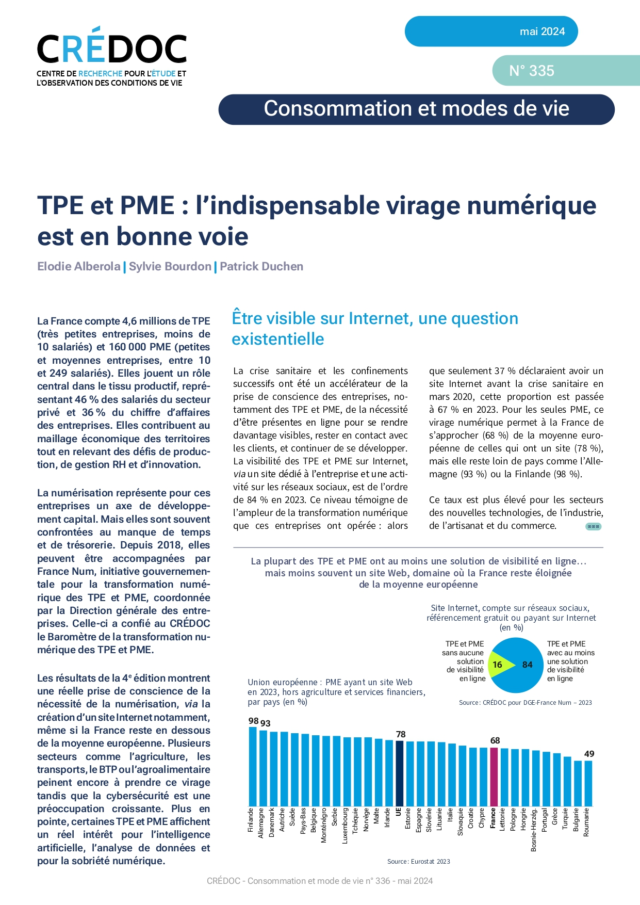

Le métier visé par la formation sera celui de développeur web/web mobile/Full Stack, dans la région Haut-de-France.
Nous allons donc tout d'abord, analyser ici, comment se comporte le marché de l'emploi dans le pays puis sur la région cible. Pour ce faire, nous allons utiliser les ressources de l'observatoire GEN_SCAN (Grande école du numérique).
Jetons un oeil sur la carte de France et la répartition des offres d'emploi par département. Cette analyse concerne le métier de développeur.
À partir des 58 761 offres d'emploi dans le numérique compris entre le 01/12/23 et 01/01/24, 6 252 correspondent à notre recherche. Nous pouvons constater que la répartition des offres n'est pas homogène et que certains départements sont plus propices à la recherche d'emploi dans le domaine.
872 offres pour Paris, 735 pour le Rhône 491 pour la Loire-Atlantique ou encore 441 pour le Nord contre 0 pour le Cher, la Haute-Marne, l'Ardèche ou bien le Lot.


Avec un nombre de 18 837 formations au 01 janvier 2024 pour 59 000 offres d'emploi, le domaine du numérique est dit "en tension".
Un indice de tension positif indique qu’il y a beaucoup d’offres d’emploi relativement au nombre de formations disponibles. Ces chiffres concernent l'ensemble des métiers du numérique dans l'hexagone.
Dans la prochaine partie, nous allons préciser notre analyse au métier du développement dans la région Haut-de-France.
Selon France Travail, l'indice de tension est élevé sur la région avec 11 390 offres d'emplois pour 1990 demandeurs d'emploi. Les entreprises font donc face à des difficultés de recrutement.

Nous constatons également que la majorité des offres d'emplois concernent des CDI avec un taux de 96 %.
Les potentielles difficultés rencontrées par les recruteurs sont l'intensité d'embauche, le lien formation-métier et le manque de main d'œuvre comme l'on peut le constater sur le schéma ci-contre.

Revenons sur les chiffres de l'observatoire GEN_SCAN. Les Haut-de-France sont la 2e région formatrice du pays derrière l'Île-de-France. Elle compte 2494 formations sur les 18 837 totales. Le secteur du développement se voit quant à lui attribuer la troisième place avec 553 formations.


En ce qui concerne l'emploi, la région se classe en 7e position avec pas moins de 3 557 offres comptabilisées, du 01 décembre au 01 janvier 2024, dont 797 pour le secteur du développement.
Avec une hausse des offres d'emploi de +4 % le métier du numérique se porte plutôt bien dans la région. La région accuse un indice de tension de 0.24 tout métier confondu et un indice de 0.25 pour la famille cible.
Nous allons maintenant nous pencher sur le tableau des besoins en talents édité par la Grande École du Numérique. Ce tableau établit le top 30 des besoins par région.
Sur le plan National les besoins en développeur web et développeur Full Stack occupent la 9 et 8e place. Sur le plan régional, les besoins de ces 2 postes occupent la 4e place pour le développement web et la 5e place pour le développement Full Stack.
Il y a donc un réel besoin dans ce secteur.
Notons également que la transformation numérique à encore du chemin à parcourir en France même si elle est en bonne voie, comme le démontre l'analyse du CREDOC sur les résultats du Baromètre France Num 2023 présenté ci-dessous.

Conclusion
L'analyse du marché de l'emploi pour les développeurs web/web mobile/Full Stack dans les Hauts-de-France démontre un réel besoin en talents.
La région présente une dynamique positive en matière d'emploi et de formation dans le domaine du numérique,
offrant des opportunités intéressantes pour les personnes souhaitant se reconvertir ou évoluer dans ce secteur.